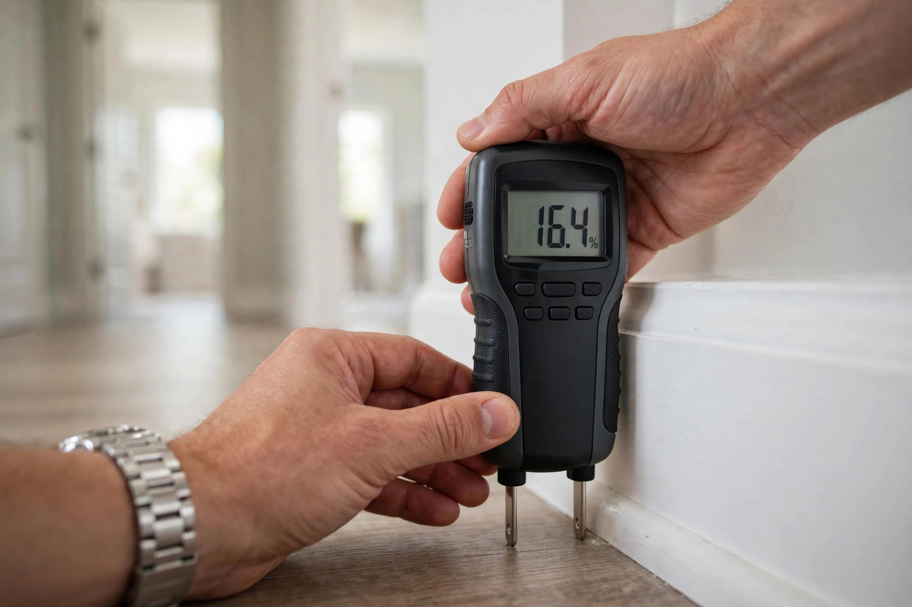
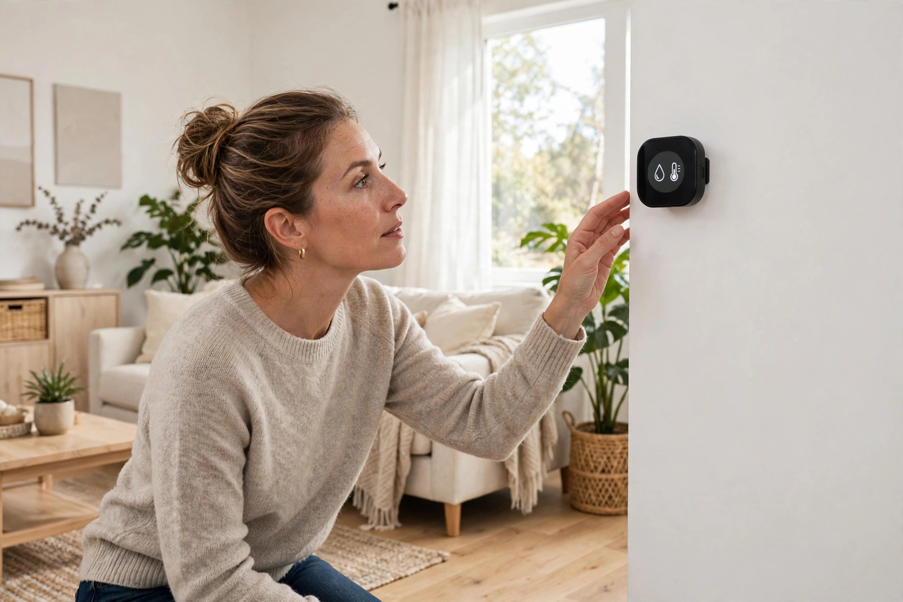

Home / Mold / Inspection & Testing
Boise, Idaho · Certified inspectorsMold inspection & testing in Boise, done right
A musty smell, a stain that keeps coming back, or a home purchase on the line — we find where moisture is getting in, measure it, and back it up with lab testing when the situation calls for it.

Inspection & testing questions, answered
How long does a mold inspection take in a typical Boise home?
Most single-family homes take 60 to 90 minutes. Larger homes or ones with crawl spaces and attics can run two hours. The lab typically returns air and surface sample results in 2 to 3 business days.
Do I need both an inspection and testing, or just one?
An inspection finds where moisture is entering and where growth is visible. Testing tells you what is in the air and on surfaces, with lab numbers. Together they answer both where it is and how concentrated it is, which is what you need before deciding on remediation.
Will the inspector have to cut into my walls?
No. A standard inspection is non-invasive: visual checks, moisture meter readings, thermal imaging where useful, and air or surface samples. If we suspect hidden growth, we will tell you exactly where and why before anyone opens anything.
Can I stay in the home during testing?
Yes. Air sampling runs quietly in the background and surface sampling is quick. You do not need to leave, seal rooms, or change anything about your routine.
What do I get after the inspection?
A written report with moisture readings by room, photos of anything we found, lab results when testing is included, and plain-language next steps. No pressure, no upsell built into the report.
Where Boise mold problems usually start
After years of inspecting homes across the valley, the same moisture sources show up again and again:
Pre-1940s homes with original plumbing
The North End's 1900s to 1920s bungalows and Foursquares often still have galvanized supply lines and cast-iron drains. Slow seepage at joints feeds mold inside wall cavities for months before anyone notices a stain.
Ridenbaugh Canal seepage
Homes near the Ridenbaugh Canal lateral system can see elevated groundwater in irrigation season. That moisture wicks through foundation walls and shows up as mold on basement drywall by late summer.
Bathroom fans venting into the attic
A surprising number of Boise homes vent bath fans straight into the attic instead of outside. Warm moist air condenses on cold roof sheathing in winter, and mold follows within a season or two.
Unsealed crawl spaces
Vented crawl spaces pull in humid summer air that condenses on cool ductwork and floor joists. We find mold on joists in roughly half the crawl spaces we inspect in older Boise neighborhoods.
A North End bungalow with a mystery smell
A homeowner in Boise's North End notices a musty odor every time the furnace kicks on, but can't see any mold. The home was built in 1915 and had a bathroom remodel in the 1990s. During inspection, moisture readings spike behind the hallway bathroom wall. A small surface sample confirms elevated spores, and the lab report points to a slow supply-line seep. The fix is a plumber for the line and targeted remediation for the wall cavity — not a whole-house tear-out. That's the value of inspecting before assuming.
What the inspection covers, step by step
Every inspection follows the same thorough sequence so nothing gets missed.
Walkthrough and history
We start with your story: when you noticed it, any leaks or floods, health symptoms, and the home's age and renovation history.
Moisture mapping
Every room gets checked with a pin and pinless moisture meter. Wet areas get mapped so we know the full extent, not just the visible stain.
Targeted sampling
Where needed, we take air samples (indoor vs. outdoor baseline) and surface samples. Everything goes to an accredited lab.
Written report
You get moisture readings, photos, lab results, and clear next steps within days — not weeks.
After the inspection: keeping it from coming back
Finding mold is step one. These habits keep it from returning:
- Fix the moisture source first — remediation without repair is temporary.
- Run bath fans during showers and 20 minutes after, vented outside.
- Keep indoor humidity between 30 and 50 percent; a $15 hygrometer tells you where you stand.
- Check under sinks and around toilets twice a year for slow drips.
- Make sure gutters and downspouts move water at least 6 feet from the foundation.
